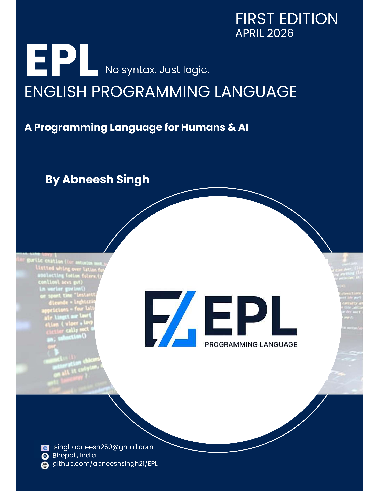

In 2023, I sat beside my younger cousin as she attempted her very first programming tutorial. She was twelve years old, curious, and enthusiastic. The tutorial asked her to write a Python program that checked whether a number was even or odd. Within five minutes, she had hit a SyntaxError on the colon she had forgotten, then an IndentationError from a misplaced space, and finally a TypeError because she had tried to print a number without converting it to a string first. She had not written a single line of logical thinking yet — she was still fighting the machinery of the language itself.
That moment stayed with me. She understood the logic perfectly — if you divide by two and the remainder is zero, then the number is even. She could explain it in plain English without hesitation. The barrier was never the idea; it was the translation of that idea into the rigid, symbolic syntax that languages like Python, JavaScript, and Java demand.
I started building EPL — the English Programming Language — that same semester. The guiding question was deceptively simple: what if the code you wrote read exactly like the explanation you would give a friend? What if "Create a variable called score and set it to one hundred" was literally valid EPL code? What if If score is greater than 90 Then Say "Excellent" Otherwise Say "Keep trying" End was a complete, runnable program?
EPL is the answer to that question. Every keyword in EPL was chosen because it is the most natural English word for the operation it represents. Say prints output. Create declares a variable. Repeat 5 times loops. If...Then...Otherwise...End branches. You do not need to know what a colon means syntactically, or why braces are required, or how indentation affects execution. You just write English, and EPL runs it.
This book is the complete, authoritative guide to EPL. It is written for two very different types of reader, and it serves both deliberately.
The first reader is a complete beginner — someone who has never written a program before. This person will find, in Parts I through IV, a thorough and patient introduction to programming concepts. The book explains not just what the syntax is, but why each concept exists, what problem it solves, and how to think about it correctly. No prior knowledge is assumed. If you have never used a terminal, we explain that. If you have never heard the word "variable," we define it from first principles.
The second reader is an experienced developer who wants to understand how a programming language actually works under the hood. This person will find, in Part II (Chapters 3–6), a detailed exposition of EPL's compiler pipeline: the Lexer, Parser, Abstract Syntax Tree, and Interpreter. These chapters explain exactly how character-by-character source code becomes running programs, using EPL's own implementation as the teaching vehicle.
By the time you finish this book, you will not only know how to write EPL programs — you will understand the fundamental theory behind how all programming languages work.
If you are a complete beginner, read this book in order from Chapter 1 through Chapter 14. Each chapter builds on the previous one. Do not skip ahead, and do not skim the explanations. The explanations are the book — the code examples exist to illustrate ideas, not to replace the act of reading and understanding.
If you have programming experience in another language, you can skim Chapters 1 and 2 to understand EPL's philosophy and setup, then dive into whichever chapters interest you. The language internals in Part II are self-contained — you can read Chapters 3–6 without reading anything else first.
If you are reading this as a reference while building something with EPL, Chapter 26 is a complete quick-reference card for every keyword, built-in function, and operator in the language.
"The most effective way to learn programming is not to memorize syntax — it is to understand the ideas that syntax expresses. Once the ideas are clear, the syntax becomes obvious."
docs/playground.html in Chrome (no installation needed), or run python epl/cli.py run yourfile.epl from the project root. Do not just read the examples — type them, run them, and modify them. The act of breaking code and fixing it teaches you more than any explanation can.Every programming language ever created was designed by programmers, for programmers. Even languages marketed as "beginner-friendly" — Python, Ruby, Scratch — carry assumptions about what the learner already knows. They assume you understand what a function is. They assume you know why parentheses are required in certain places. They assume the mental model of a computer that only experienced developers actually have.
The result is a well-documented phenomenon: the cognitive load barrier. When a new programmer sits down to write their first program, they are simultaneously trying to understand:
print("Hello") vs console.log("Hello") vs System.out.println("Hello"))This is four completely separate cognitive tasks happening at once. Research in educational psychology (Sweller, 1988) shows that the human working memory can hold approximately four discrete chunks of information simultaneously. Asking a new programmer to juggle all four of the above guarantees that some — and often all — of them will fail.
EPL attacks this problem at its root. It eliminates the syntax obstacle by making the language read as close to natural English as is computationally practical. When you write EPL, you are thinking about the logical task only. The language gets out of the way.
EPL's design is governed by a single principle: at every decision point, choose the option that reads most naturally as English. This principle guided every keyword choice, every structural decision, and every feature inclusion or exclusion.
Consider how other languages express a loop that runs five times:
/* C / JavaScript / Java */ for (int i = 0; i < 5; i++) { ... End # Python for i in range(5): ... // EPL Repeat 5 times ... End
The C-style loop requires you to know: loop initialisation syntax, comparison operators, increment operators, and block delimiters — all before you can even begin thinking about what to repeat. The Python version is better, but range(5) is still a function call that requires understanding of what "range" means and why zero-based indexing makes the loop run five times (not six). The EPL version reads as a direct English instruction: "Repeat this five times." A child can understand it without any explanation.
This is not accidental simplicity — it is deliberate, engineered accessibility. And it does not come at the cost of power. EPL supports the same features as Python: object-oriented programming, functional programming, databases, web servers, and full access to the Python ecosystem. You get English readability and professional capability.
Keywords read as English sentences. If score is greater than 90 Then is valid EPL. No cryptic symbols, no mandatory punctuation.
Write procedural scripts, object-oriented applications, or functional pipelines — all in the same language, using whichever style fits the problem.
EPL compiles to Python, JavaScript, and Kotlin. Write once, deploy anywhere — on the web, on mobile, or as a command-line tool.
Web server, SQLite database, file I/O, and the full Python library ecosystem — all available without installing a single extra package.
To understand what makes EPL unique, it helps to compare it side-by-side with the languages most people encounter first. The following table shows how the same concept is expressed in each language, demonstrating the syntactic complexity that EPL eliminates.
| Feature | Python | JavaScript | Java | EPL |
|---|---|---|---|---|
| Print text | print("Hi") | console.log("Hi") | System.out.println("Hi") | Say "Hi" |
| Declare variable | x = 5 | let x = 5; | int x = 5; | x = 5 |
| If-else | if x>0: | if(x>0){...End | if(x>0){...End | If x > 0 Then |
| Loop 5 times | for i in range(5): | for(let i=0;i<5;i++) | for(int i=0;i<5;i++) | Repeat 5 times |
| Function | def greet(name): | function greet(name){ | public static void greet(String name){ | Function greet takes name |
| Error handling | try: ... except e: | try{...Endcatch(e){...End | try{...Endcatch(Exception e){...End | Try ... Catch e ... End |
EPL is not a toy language. It is a production-capable tool. The following are real projects built with EPL, each demonstrating a different capability domain.
EPL excels at writing scripts — file processors, data transformers, automation utilities. Any task you would reach for Python or Bash to accomplish, EPL can handle with cleaner, more readable code. A script to read a CSV file, filter records, and output a summary can be written in EPL in fifteen lines that any non-programmer can read and understand.
EPL includes a built-in web framework. With three keywords — Create webapp, Route, and Start on port — you have a running HTTP server. Add database calls, and you have a complete CRUD application. No Flask, no Express, no Spring Boot required.
EPL directly supports SQLite, the world's most widely deployed database engine. The functions real_db_connect, real_db_execute, and real_db_query provide everything you need to create tables, insert records, run queries, and process results — with no ORM, no migration system, and no configuration files.
EPL's functional programming features — map, filter, reduce, and lambda expressions — allow you to express data transformations as clean, readable pipelines. Filter a list of students to those scoring above 80, extract their names, sort them — all in three chained lines that read almost as a sentence.
Say "Hello, World!" in three other programming languages you have encountered. Compare the amount of prior knowledge each version requires.Before installing anything, let us build a mental model of what happens when you run an EPL program. Understanding this model will make everything that follows—installation, error messages, the CLI—make much more sense.
When you write EPL code in a .epl file and run it, the following sequence occurs behind the scenes:
Your EPL file (.epl)
│
▼
[ 1. LEXER ]
Reads characters, produces tokens
("If", "x", ">", "0", "Then", ...)
│
▼
[ 2. PARSER ]
Reads tokens, builds a tree (AST)
representing the program's structure
│
▼
[ 3. INTERPRETER ]
Walks the AST, executes each node
in the correct order with the correct values
│
▼
Program Output (printed to your screen)This three-stage pipeline — Lexer, Parser, Interpreter — is the foundation of how nearly all interpreted programming languages work. Python uses this approach. Ruby uses it. JavaScript interpreters use it. EPL uses it too, and because EPL is open source, you can read every line of each stage in the project files. Part II of this book (Chapters 3–6) explains each stage in deep technical detail.
EPL requires Python 3.8 or newer. Python is the underlying runtime that EPL's interpreter is written in. If you do not yet have Python installed, download it from python.org and follow the installer instructions for your operating system.
The simplest way to install EPL is via pip, Python's package manager. Open a terminal (Command Prompt on Windows, Terminal on Mac or Linux) and run:
pip install eplang
epl --version # Should print: EPL 1.x.xIf you want to explore or modify EPL's source code — which this book actively encourages — clone the repository directly:
git clone https://github.com/abneeshsingh21/EPL
cd EPL
pip install -e . # Editable install — changes to source take effect immediately
python epl/cli.py --versionLet us write and run your first program right now. Create a file named hello.epl and type the following:
Note: My first EPL program Say "Hello, World!" Say "I am learning EPL." name = "Abneesh" Say "This language was created by: " + name
Now run it:
python epl/cli.py run hello.epl
You should see:
Hello, World! I am learning EPL. This language was created by: Abneesh
Note: My first EPL program — This is a comment. The Lexer skips everything after Note: on that line. Comments are notes to human readers; EPL ignores them completely.Say "Hello, World!" — Say is EPL's print command. It evaluates whatever follows it and sends the result to your screen. The value in quotes is a string literal — a fixed piece of text.name = "Abneesh" — This creates a variable called name and stores the string "Abneesh" in it. Unlike many languages, EPL does not require you to declare the type or use a special keyword like var or let — you just assign directly.+ operator joins two strings together. This is called string concatenation. "This language was created by: " + "Abneesh" produces the combined string "This language was created by: Abneesh".EPL provides a rich command-line interface through epl/cli.py. Understanding these commands is essential to using EPL effectively.
| Command | What It Does | When to Use It |
|---|---|---|
cli.py run file.epl | Execute the file directly | Everyday development and testing |
cli.py compile file.epl | Compile to Python (.py) | When you want to deploy as a Python script |
cli.py compile file.epl --target js | Compile to JavaScript | Browser or Node.js deployment |
cli.py compile file.epl --target kotlin | Compile to Kotlin | Android or JVM deployment |
cli.py repl | Interactive shell | Experimenting with small expressions |
cli.py check file.epl | Syntax check only (no execution) | Before running, to catch errors early |
If you prefer not to use the terminal, EPL includes a full browser-based playground at docs/playground.html. Open this file in Google Chrome or Microsoft Edge. You will see a code editor on the left and an output panel on the right. Type EPL code, click "Run", and see the output immediately — no installation, no terminal, no setup required.
The playground uses Pyodide — a WebAssembly port of Python — to run the EPL interpreter entirely inside your browser. This means it works offline and does not send your code to any server. Everything runs locally on your machine.
A comment is a piece of text in your source code that EPL completely ignores during execution. Comments are written for human readers — to explain what code does, why a decision was made, or to leave notes for yourself or collaborators. Professional programmers consider well-written comments as important as the code itself.
Note: Single-line comment — everything after "Note:" is ignored NoteBlock This is a multi-line comment block. Useful for longer explanations, documenting functions, or temporarily disabling sections of code during debugging. End Say "This line executes normally" Note: Inline comment at end of a line
NoteBlock must be closed with End. If you forget, EPL will treat all subsequent code as a comment and your program will appear to do nothing. If your program produces no output and you cannot figure out why, check for unclosed NoteBlock blocks.pip install eplang or by cloning the repositorySay keyword prints output; the = operator assigns values to variablesdocs/playground.html runs EPL without any installationNote: for single-line comments and NoteBlock...End for multi-line commentsSay.Say "Hello). Observe and read the error message. What information does it give you?cli.py compile command to compile a simple EPL file to Python. Open the resulting .py file and read its contents. Can you understand how EPL translated your code?Say 2 + 2. What does it print? Now try Say "2" + "2". What is the difference, and why?Imagine you are reading a sentence in English: "The quick brown fox jumps." As your eyes move left to right, your brain is performing a remarkable operation — it is grouping sequences of characters into meaningful units called words. You do not process individual letters: t, h, e, (space), q, u, i, c, k. You process the grouped unit "The", then "quick", then "brown", and so on. This grouping happens automatically and unconsciously, but it is a real and necessary cognitive step before meaning can be extracted.
A Lexer (also called a Tokeniser or Scanner) performs exactly this operation for source code. It reads the raw character stream of your EPL program and groups characters into meaningful units called tokens. A token is the smallest meaningful unit in a programming language — the equivalent of a word in English.
Consider this simple EPL statement:
Say "Hello, World!"
The Lexer reads this left to right, character by character, and produces the following token list:
Token(type=KEYWORD, value="Say") Token(type=STRING, value="Hello, World!")
Just two tokens. The keyword Say and the string literal "Hello, World!". The surrounding quotation marks are consumed by the Lexer (they tell it where the string starts and ends) but they are not stored in the token value — the value is the content of the string, not the delimiters.
EPL's Lexer recognises nine fundamental token types. Every valid EPL program is composed entirely of these nine types — if any character sequence cannot be classified into one of them, the Lexer raises a LexError.
| Token Type | Examples | Description |
|---|---|---|
KEYWORD | If, Say, Function, For each | Reserved words with special meaning in EPL's grammar |
IDENTIFIER | name, calculate_tax, student_age | User-defined names for variables, functions, classes |
INTEGER | 0, 42, -7, 1000 | Whole number literals |
FLOAT | 3.14, 0.5, 100.0 | Decimal number literals |
STRING | "hello", "EPL is great" | Text enclosed in double quotes |
BOOLEAN | true, false | Boolean literal values |
OPERATOR | +, -, *, /, ==, != | Arithmetic and comparison operators |
PUNCTUATION | [, ], (, ), , | Structural characters |
NEWLINE | (end of line) | Statement terminator (EPL uses newlines, not semicolons) |
EPL's most distinctive lexing challenge comes from its multi-word keywords. In most programming languages, every keyword is a single word: if, for, while. In EPL, many keywords are composed of multiple English words: Function, For each, is equal to, Repeat...times.
The Lexer uses a strategy called maximum munch (formally: maximal munch) to handle this. The rule is simple: always consume the longest possible sequence of characters that forms a valid token. When the Lexer sees the word "For", it does not immediately emit a token. It looks ahead — is the next significant word "each"? If yes, the entire phrase "For each" is tokenised as a single KEYWORD token. If the next word is something else (like "i from 2 to 10"), then "For" alone forms the keyword.
Input: "For each student in roster"
│
▼ Lexer sees "For"
Lookahead: next non-whitespace word is "each"
│
▼ "For each" = known multi-word keyword
Token(KEYWORD, "For each")
Token(IDENTIFIER, "student")
Token(KEYWORD, "in")
Token(IDENTIFIER, "roster")This design decision — multi-word keywords — is central to EPL's English-first philosophy. "For each student in roster" reads as a natural English phrase. The Lexer's job is to honour that phrase structure, not to artificially break it.
EPL supports an extremely useful feature called string interpolation: you can embed variable values directly inside strings using the $varname syntax. Instead of writing "Hello, " + name + "!", you write "Hello, $name!". The Lexer is responsible for detecting and handling this syntax at the token level.
When the Lexer encounters a string like "Score: $score out of 100", it does not emit a simple STRING token. Instead, it recognises the $ marker and emits an INTERPOLATED_STRING token that carries metadata about which substrings are literal and which are variable references. The Parser then knows to generate code that evaluates the variable and concatenates the result.
student = "Alice" score = 94 Say "Student: $student scored $score points." Note: Output: Student: Alice scored 94 points.
One of the Lexer's earliest responsibilities is to identify and discard comments before any other processing occurs. When the Lexer encounters the sequence Note:, it reads and discards every character until the end of the current line. When it encounters NoteBlock, it discards everything until it finds the matching End keyword. This stripping happens before tokens are emitted, so comments are completely invisible to the Parser and Interpreter.
This is why comments have no performance impact on your program — they are removed at the very beginning of the pipeline, not evaluated at runtime.
EPL's Lexer is implemented in epl/lexer.py. The core class is Lexer, and its primary method is tokenise(), which accepts a string (your source code) and returns a list of Token objects. The Token class is a simple data container with three fields: type, value, and line (the source line number, used in error reporting).
The tokenise() method implements a finite state machine: a loop that maintains a "current position" in the source string and a "current state" (NORMAL, INSIDE_STRING, INSIDE_COMMENT, etc.). At each iteration, the current character determines the next state transition. This is the standard textbook approach for implementing lexers and is the same approach used in Python's own tokeniser (tokenize module).
Function and For each$varname syntax) is detected and handled by the Lexerepl/lexer.py uses a finite state machine patternepl/lexer.py in your editor. Find the tokenise() method and read through it. Identify where multi-word keywords are handled. What data structure is used to store the keyword list?If age is greater than 18 Then Say "Adult" EndFunction greet takes name. Why would that be a problem for the Parser?epl/lexer.py inside the tokenise loop to print each token as it is produced. Run a simple EPL file and observe the token output. This gives you a real-time view of the Lexer's work.After the Lexer runs, we have a flat, ordered list of tokens. But a list is not enough to capture the meaning of a program. Consider this EPL expression: 2 + 3 * 4. In a flat token list, this is just five tokens: INTEGER(2), OPERATOR(+), INTEGER(3), OPERATOR(*), INTEGER(4). But humans — and computers — know that this should be evaluated as 2 + (3 * 4) = 14, not (2 + 3) * 4 = 20. The multiplication has higher precedence than the addition.
The token list contains no information about precedence or grouping. The Parser reads the token list and transforms it into a tree structure where the hierarchy of the tree encodes the correct evaluation order. In the tree, * is a child of +, which ensures multiplication is evaluated first — before the addition that depends on its result.
Before the Parser can build a tree, it needs rules — a precise specification of what sequences of tokens are valid in EPL. These rules form the language's grammar. EPL's grammar is documented using a notation called EBNF (Extended Backus-Naur Form). EBNF is the standard way to describe programming language grammars and is used in the official specifications of Python, Java, C++, and virtually every other language.
Here is how to read EBNF notation:
| EBNF Symbol | Meaning | Example |
|---|---|---|
::= | "is defined as" | statement ::= ... |
| | "or" (alternative) | A | B means A or B |
[ ... ] | Optional (zero or one) | [Otherwise] |
{ ... End | Repetition (zero or more) | {statementEnd |
( ... ) | Grouping | (A | B) C |
"text" | Literal token | "If" |
Here is a simplified fragment of EPL's grammar in EBNF:
program ::= { statement End EOF
statement ::= say_stmt
| assignment
| if_stmt
| while_stmt
| for_stmt
| function_def
| return_stmt
say_stmt ::= "Say" expression
assignment ::= IDENTIFIER "=" expression
if_stmt ::= "If" expression "Then" NEWLINE
{ statement End
[ "Otherwise" NEWLINE { statement End ]
"End"
expression ::= comparison { ("and" | "or") comparison End
comparison ::= addition { ("==" | "!=" | ">" | "<" | ">=" | "<=") addition End
addition ::= multiplication { ("+" | "-") multiplication End
multiplication::= primary { ("*" | "/" | "%") primary End
primary ::= INTEGER | FLOAT | STRING | BOOLEAN
| IDENTIFIER
| "(" expression ")"
| function_callNotice the layered structure: expression is built from comparison, which is built from addition, which is built from multiplication, which is built from primary. This layering is what implements operator precedence. Operators lower in the hierarchy (closer to primary) bind more tightly — they are evaluated first. Since multiplication is below addition in the hierarchy, the * operator binds more tightly than +, giving us the correct mathematical precedence automatically.
EPL implements its Parser using a technique called recursive descent. In recursive descent parsing, each grammar rule becomes a function (a method in a class). The function for a grammar rule reads tokens from the stream and, when it encounters a sub-rule, calls the function for that sub-rule. Because grammar rules can reference other grammar rules (which is why they are called "recursive"), the functions call each other recursively — hence "recursive descent."
For example, the parse_if_stmt() method in EPL's Parser (epl/parser.py) works as follows:
If keyword tokenparse_expression() to parse the condition (this may call itself recursively)Then keyword tokenparse_statement() repeatedly)Otherwise If, handle the else-if chainOtherwise, parse the "else body"End keyword tokenIfNode AST node containing the condition, then-body, and else-bodyThis approach has several advantages over alternative parsing strategies (like shift-reduce parsing or parser combinators): it produces clear, readable code that directly mirrors the grammar, it generates highly informative error messages because you always know exactly which grammar rule you are inside, and it is easy to extend with new language features.
EPL's Parser is designed to produce the most helpful possible error messages. When parsing fails — because the token stream doesn't match any known grammar rule — the Parser raises a ParseError with three pieces of information: the line number, a description of what was expected, and a hint about how to fix the problem.
For example, if you write If x > 0 and forget the Then keyword, the Parser does not just say "syntax error on line 1." It says: "ParseError on line 1: Expected 'Then' after the condition in an If statement. Did you mean: If x > 0 Then?" This hint-driven error system is one of EPL's most valuable features for learners, who need specific, actionable guidance rather than cryptic error codes.
Parser classepl/parser.py generates specific, hint-driven error messages with line numbers and fix suggestionsa + b * c - d. Use the grammar fragment from Section 4.2. Which operator is at the root of the tree? Why?If x > 0 Say "positive" End valid EPL? What is missing? Write the corrected version.epl/parser.py and find the method that parses while loops. Read through it and describe what it does, in plain English, step by step.Repeat N times ... End loop construct. Use the notation from Section 4.2.End) and run it. Read the error message. Does it tell you the exact line? Does it give a hint?After the Parser finishes its work, the result is an Abstract Syntax Tree (AST) — a tree-shaped data structure where each node represents one construct in the program. The word "abstract" means that the tree captures the logical structure of the program, not every syntactic detail. Tokens like parentheses, commas, and the Then and End keywords have served their purpose in helping the Parser understand the structure; they do not appear in the AST. The AST contains only the semantically meaningful elements.
Consider this EPL snippet:
x = 5 + 3
The AST for this single line looks like this:
AssignNode
├── name: "x"
└── value:
BinaryOpNode
├── operator: "+"
├── left: NumberNode(value=5)
└── right: NumberNode(value=3)Read this tree from the bottom up to understand evaluation order. First, NumberNode(5) evaluates to the integer 5. Then NumberNode(3) evaluates to 3. Then BinaryOpNode("+", 5, 3) evaluates to 8. Finally, AssignNode takes the value 8 and stores it under the name "x" in the current scope.
Every node in EPL's AST is an instance of a class defined in epl/ast_nodes.py. Each class corresponds to one language construct. There are nodes for: numbers, strings, booleans, null values, binary operations, unary operations, variable references, variable assignments, If statements, While loops, For loops, Repeat loops, function definitions, function calls, return statements, class definitions, method calls, list literals, map literals, list indexing, attribute access, and more.
| Node Class | Represents | Key Fields |
|---|---|---|
NumberNode | A numeric literal | value (int or float) |
StringNode | A string literal | value (str) |
BoolNode | true or false | value (bool) |
IdentifierNode | A variable reference | name (str) |
AssignNode | Variable assignment | name, value |
BinaryOpNode | A binary expression | op, left, right |
IfNode | An If statement | condition, then_body, else_body |
WhileNode | A While loop | condition, body |
FuncDefNode | A function definition | name, params, body |
FuncCallNode | A function call | name, args |
ClassDefNode | A class definition | name, fields, methods |
ListNode | A list literal | elements |
Let us trace through a slightly more complex EPL program and see the full AST the Parser produces:
If score >= 90 then Say "Excellent" Otherwise Say "Keep trying" End
IfNode
├── condition:
│ BinaryOpNode(op=">=")
│ ├── left: IdentifierNode(name="score")
│ └── right: NumberNode(value=90)
├── then_body: [
│ SayNode(
│ value: StringNode("Excellent")
│ )
│ ]
└── else_body: [
SayNode(
value: StringNode("Keep trying")
)
]This tree completely and unambiguously represents the program structure. The Interpreter only needs to walk this tree — it does not need to re-read the source code or the token list. The AST is the canonical, authoritative representation of the program after parsing.
Then and End are not in the ASTepl/ast_nodes.pyThe Interpreter in epl/interpreter.py uses a technique called the AST Visitor pattern. The core idea is that the Interpreter defines a method for each type of AST node, named exec_NodeName. When it encounters a node in the tree, it dynamically dispatches to the corresponding method. For example:
NumberNode → calls exec_NumberNode() → returns an integer or float valueAssignNode → calls exec_AssignNode() → stores a value in the environmentIfNode → calls exec_IfNode() → evaluates the condition, then executes the correct branchFuncCallNode → calls exec_FuncCallNode() → finds the function, creates a new scope, executes the bodyThe dynamic dispatch is implemented using Python's getattr() function, which looks up a method by name at runtime. This means adding a new AST node type to EPL requires only: (1) creating the new node class in ast_nodes.py, (2) adding a parsing rule in parser.py, and (3) adding the corresponding exec_ method in interpreter.py. The rest of the system requires no changes.
The Interpreter manages variable storage using a class called Environment (defined in epl/environment.py). An Environment is essentially a dictionary that maps variable names to their values. But EPL supports lexical scoping — the rule that a variable's scope is determined by where it is written in the source code, not by where it is called at runtime. To implement lexical scoping, each Environment maintains a reference to its parent Environment.
Global Environment ├── score = 95 ├── name = "Alice" └── parent: None ← top level, no parent Function greet's Environment (created on call) ├── greeting = "Hello" ← local variable └── parent: → Global ← links to outer scope When looking up "name" inside greet(): 1. Check greet's environment → not found 2. Check parent (Global) → found! value = "Alice" 3. Return "Alice"
When a variable is referenced inside a function, the Interpreter first looks in the function's own Environment. If not found, it follows the parent pointer to the enclosing scope and looks there. This continues up the chain until either the variable is found or the top-level (global) Environment is reached with no parent — at which point a NameError is raised.
This chain-of-environments architecture is the same fundamental mechanism used by Python, JavaScript, and all languages with lexical scoping. Understanding it deeply will help you reason about variable visibility in any language you ever work with.
When the Interpreter encounters a FuncCallNode, a precise sequence of steps occurs:
FuncDefNode (the AST node that defined the function).Environment object is created with its parent pointing to the scope where the function was defined (not where it was called — this is the key to lexical scoping).ReturnNode is encountered, execution stops and the return value is passed back to the caller via a special ReturnSignal exception (a Python exception used for control flow, not for error handling).EPL provides a set of built-in functions — to_integer(), to_text(), type_of(), max(), min(), and so on — that are implemented directly in Python inside epl/builtins.py. When the Interpreter starts, it creates the global Environment and populates it with these built-in functions. They behave exactly like user-defined functions from the caller's perspective, but their bodies are Python code rather than EPL AST nodes.
exec_ methodEnvironment class — a dictionary with a parent pointerepl/interpreter.py and find the exec_IfNode() method. Read through it. How does it handle the "Otherwise If" (else-if) chain?ReturnSignal Python exception for return values instead of a regular return statement. Why is this approach necessary given that exec_ methods call each other recursively?Before writing a single line of EPL code, you need a clear mental model of what a variable actually is. The word "variable" comes from mathematics, where it means a symbol that can take on different values. In programming, is it much the same — but more concrete.
Think of your computer's memory as a vast grid of labelled boxes. Each box can hold one value at a time, and each box has a unique address. A variable gives a human-readable name to one of those boxes, so you can refer to it by name instead of by its raw memory address. When you write age = 17 in EPL, you are saying: "Find an empty memory box, store the value 17 in it, and attach the label 'age' to it so I can find it later."
After that, whenever you write age anywhere in your program, EPL knows to go to that labelled box and retrieve whatever value is currently stored there. You can change the value in the box at any time — that is what makes it a variable: its value can vary over the program's lifetime.
In EPL, you create a variable simply by assigning a value to a name using the = operator. There is no special keyword required — no var, no let, no int, no type declaration. Just write the name, an equals sign, and the value.
Note: Creating variables of different types name = "Alice" Note: text (string) age = 21 Note: whole number (integer) gpa = 3.85 Note: decimal number (float) is_enrolled = true Note: boolean (true or false) nickname = nothing Note: absence of a value (null) Say "Student: " + name Say "Age: " + to_text(age) Say "GPA: " + to_text(gpa) Say "Enrolled: " + to_text(is_enrolled)
name, _temp, value1student_score, count2If, Say, End cannot be variable namesName and name are two different variablesstudent_name, total_price, is_valid.The whole point of a variable is that its value can change. You change it simply by assigning a new value to the same name. The old value is replaced — EPL does not keep a history of previous values.
score = 70 Say score Note: prints 70 score = 85 Note: overwrites the old value Say score Note: prints 85 Note: EPL also has shortcut operators for common updates: Increase score by 5 Note: score is now 90 (equivalent to score = score + 5) Decrease score by 10 Note: score is now 80 Multiply score by 2 Note: score is now 160 Say score Note: prints 160
The shortcut operators Increase by, Decrease by, and Multiply by are EPL's English equivalents of the +=, -=, and *= operators found in other languages. They are purely syntactic sugar — the Interpreter converts them to the equivalent addition and assignment operations before execution.
Scope is the region of a program where a variable is accessible. This is one of the most important concepts in programming, and understanding it prevents a large class of bugs that confuse beginners and experienced developers alike.
EPL has two types of scope: global scope and local scope.
A variable defined at the top level of your program — not inside any function or block — exists in the global scope. It is accessible from anywhere in the program, including inside functions.
A variable defined inside a function exists in that function's local scope. It is created fresh every time the function is called and destroyed when the function returns. It is completely invisible outside the function. Trying to access it outside the function will cause a NameError.
greeting = "Hello" Note: GLOBAL — accessible everywhere Function say_hello message = "World" Note: LOCAL — only exists inside this function Say greeting + ", " + message Note: can read global 'greeting' End say_hello() Say greeting Note: Works — greeting is global Note: Say message ← This would cause NameError: 'message' not defined
EPL allows you to assign multiple variables on a single line, which is useful for readability when initialising related values together:
Note: Initialising multiple counters wins = losses = draws = 0 Note: Swapping two values using a temporary variable a = 10 b = 20 temp = a a = b b = temp Say a Note: 20 Say b Note: 10
= operator: no special keyword needed in EPLIncrease by, Decrease by, and Multiply by are English shortcut operators for common updatesx = 100, then uses Increase by and Decrease by to make a series of changes, printing the value after each step.Computers store everything as binary numbers — sequences of 0s and 1s. Whether you are storing the number 42, the letter "A", or the colour red, it all ends up as binary. Data types tell the computer (and the programmer) how to interpret that binary data. The bit pattern 01000001 means the number 65 if interpreted as an integer, but the letter "A" if interpreted as a character.
Programming languages use type systems to protect you from interpreting data the wrong way. When you try to add a number to a text string in a strongly-typed language, it refuses — because adding those two things is almost never what you actually want. EPL is dynamically typed: types are checked at runtime rather than at compile time. This means EPL is flexible and fast to write, but you must be aware of types to avoid unexpected behaviour.
An integer is any whole number — positive, negative, or zero — with no decimal component. Integers are used for counting, indexing, and any situation where fractional values make no sense (you cannot have 2.7 students).
population = 8000000000 Note: eight billion — no commas needed temperature = -15 Note: negative integers are valid inventory = 0 Note: zero is an integer year = 2025 Say type_of(year) Note: prints "integer" Say year + 1 Note: prints 2026 Say population / 1000000 Note: prints 8000 (integer division)
EPL integers have unlimited precision — they can be as large or as small as your computer's memory allows. There is no fixed maximum value (unlike C's int which is limited to about 2 billion). This is because EPL's integers are backed by Python's arbitrary-precision integer type.
A float (short for "floating-point number") is a number with a decimal component. Floats are used for measurements, percentages, prices, scientific values, and any calculation that requires precision beyond whole numbers.
pi = 3.14159265 price = 19.99 tax_rate = 0.18 Note: 18% tax rate as a decimal temperature = -3.7 total = price * (1 + tax_rate) Say total Note: 23.9882 (price + tax) Say type_of(pi) Note: prints "float"
0.1 + 0.2 in EPL (as in Python and JavaScript) gives 0.30000000000000004, not exactly 0.3. This is not a bug in EPL — it is a fundamental property of how floating-point arithmetic works on all computers. For financial calculations requiring exact decimal arithmetic, always round results to the required number of decimal places using the round() function.A string is an ordered sequence of characters — letters, digits, spaces, punctuation, emoji, or any other Unicode character. Strings are used to represent any data that is inherently textual: names, messages, file paths, URLs, configuration values.
In EPL, strings are always enclosed in double quotes. They can be any length — from an empty string "" (zero characters) to a multi-sentence paragraph.
empty = "" Note: empty string — zero characters letter = "A" Note: single character city = "New Delhi" Note: multiple words are fine message = "She said \"hello\"" Note: escaped quotes inside string multiline = "Line one\nLine two\nLine three" Note: \n = newline Say city.length Note: 9 (number of characters) Say city.upper() Note: "NEW DELHI" Say city.lower() Note: "new delhi" Say city.contains("Delhi") Note: true
One of the most common operations in EPL programs is converting between strings and numbers. You cannot directly concatenate a number with a string — you must convert the number to text first using to_text(). Conversely, if you have a string that looks like a number (e.g., user input from the terminal), convert it to an integer or float using to_integer() or to_float().
age = 21 Say "Age: " + to_text(age) Note: correct — converts 21 to "21" first user_input = "42" Note: this came from a user — it's text, not a number actual_num = to_integer(user_input) Say actual_num + 8 Note: 50 — now it behaves as a number
A boolean value can only be one of two things: true or false. Booleans are the language of decisions — every If statement, every While loop condition, every comparison expression ultimately produces or consumes a boolean value.
The name "boolean" honours George Boole, a 19th-century mathematician who developed Boolean algebra — the branch of mathematics that underpins all digital logic.
is_raining = true has_umbrella = false is_adult = age >= 18 Note: comparison produces a boolean Say type_of(is_raining) Note: "boolean" Say is_adult Note: true or false depending on age Note: Booleans work with logical operators should_carry_umbrella = is_raining and not has_umbrella Say should_carry_umbrella Note: true (raining AND no umbrella)
Sometimes a variable has no value — not zero, not an empty string, but genuinely no value at all. EPL represents this with the keyword nothing, which is equivalent to Python's None, JavaScript's null, or SQL's NULL.
Common uses for nothing: initialising a variable before you know its value, returning from a function that has no meaningful result, and representing optional fields in a data structure that may or may not be populated.
result = nothing Note: no value yet If result == nothing then Say "No result available yet" End Say type_of(result) Note: "null"
At any point in your program you can ask EPL what type a value is by calling type_of(). This is extremely useful for debugging — when a program behaves unexpectedly, checking the type of a value often immediately reveals the problem (e.g., a number was accidentally stored as a string).
Say type_of(42) Note: "integer" Say type_of(3.14) Note: "float" Say type_of("hi") Note: "string" Say type_of(true) Note: "boolean" Say type_of(nothing) Note: "null" Say type_of([1,2,3]) Note: "list"
to_text() to concatenate with numberstrue or false; the output of all comparisons and conditionsNone / SQL's NULLtype_of() to inspect any value's type at runtime — invaluable for debuggingSay 5 / 2? Is it 2 or 2.5? Run it to find out. What type does division produce in EPL?power(n, 0.5)), and whether it is greater than 50.type_of(to_text(42))? Predict the answer before running it, then verify.Say "Score: " + 95. What error do you get? Fix it.0.1 + 0.2 != 0.3 evaluate to true in most programming languages? (Search for "floating point representation binary".) What does this imply about comparing floats for equality?An expression is any combination of values, variables, and operators that evaluates to a single value. The simplest expression is a literal value like 42 or "hello". A slightly more complex expression is x + 5. A complex expression might be (score * weight) / total_weight >= pass_threshold.
Expressions can appear anywhere a value is expected: on the right side of an assignment, as an argument to Say, as the condition of an If, as a function argument. The Interpreter always evaluates an expression to a single concrete value before using it.
| Operator | Name | Example | Result | Notes |
|---|---|---|---|---|
+ | Addition | 10 + 3 | 13 | Also concatenates strings |
- | Subtraction | 10 - 3 | 7 | |
* | Multiplication | 10 * 3 | 30 | |
/ | Division | 10 / 3 | 3.333... | Always returns float |
// | Integer division | 10 // 3 | 3 | Discards remainder |
% | Modulo (remainder) | 10 % 3 | 1 | Remainder after division |
** | Exponentiation | 2 ** 8 | 256 | 2 to the power of 8 |
The modulo operator (%) deserves special attention because beginners often overlook it. It computes the remainder after integer division. This makes it extremely useful for:
n % 2 == 0 is true if n is evencounter % 7 cycles through 0, 1, 2, 3, 4, 5, 6, 0, 1, ... — useful for day-of-week calculationsn % k == 0 is true exactly when n is divisible by kComparison operators compare two values and always produce a boolean result (true or false). They are the foundation of all conditional logic in EPL.
| EPL Operator | English Alias | Meaning | Example |
|---|---|---|---|
== | is equal to | Equal | age == 18 |
!= | is not equal to | Not equal | name != "Bob" |
> | is greater than | Greater than | score > 90 |
< | is less than | Less than | price < 100 |
>= | is greater than or equal to | Greater or equal | age >= 18 |
<= | is less than or equal to | Less or equal | marks <= 40 |
EPL supports both symbolic comparisons (==, !=, etc.) and natural English phrasing. You can write either If age >= 18 Then or If age is greater than or equal to 18 Then — both are valid and produce identical code. The English forms are particularly useful in teaching contexts.
Logical operators combine boolean values or expressions to produce new boolean values. They are the building blocks of compound conditions.
| Operator | Meaning | True when... | Example |
|---|---|---|---|
and | Logical AND | Both sides are true | age >= 18 and has_id == true |
or | Logical OR | At least one side is true | is_member or has_coupon |
not | Logical NOT | The operand is false | not is_banned |
age = 20 has_ticket = true is_vip = false can_enter = age >= 18 and has_ticket Say can_enter Note: true gets_discount = is_vip or age < 12 Say gets_discount Note: false (neither condition is true) must_verify = not has_ticket Say must_verify Note: false (they DO have a ticket)
When multiple operators appear in a single expression, EPL evaluates them in a fixed order called operator precedence. Higher-precedence operators are evaluated before lower-precedence ones — exactly as in mathematics.
| Precedence | Operators | Associativity |
|---|---|---|
| Highest | ** (exponentiation) | Right to left |
not (unary) | Right to left | |
* / // % | Left to right | |
+ - | Left to right | |
== != < > <= >= | Left to right | |
and | Left to right | |
| Lowest | or | Left to right |
When in doubt, use parentheses to make the intended order explicit. Parentheses always override precedence rules, and they also make the code much easier to read:
Note: Without parentheses — relies on precedence rules result = 2 + 3 * 4 Note: 14, not 20 (multiplication first) Note: With parentheses — explicit and clear result = (2 + 3) * 4 Note: 20 (addition first) Note: compound condition — parentheses make logic crystal clear is_eligible = (age >= 18 and has_id) or is_vip
+, -, *, /, //, %, ** — remember that / always returns float%) returns the remainder — essential for even/odd checks and cycling==) and English forms (is equal to) are validand, or, not) combine booleans into compound conditions3 + 4 * 2 - 8 // 3. Then verify by running it.x = 5 (assignment) and x == 5 (comparison)? Why do beginners often confuse them? When would writing = instead of == inside an If condition cause a bug?A string in EPL is not simply a blob of text — it is an ordered sequence of characters, and this fact unlocks a powerful set of operations. Because a string has a specific length and each character has a specific position (called its index), you can do things like: extract the third character, check whether it starts with a capital letter, find all occurrences of a word, or reverse the entire string.
EPL uses zero-based indexing for strings. This means the first character is at index 0, the second at index 1, and so on. The last character is at index length - 1. While this may feel unnatural initially, it is the convention in virtually all programming languages (Python, JavaScript, Java, C++) and has important mathematical advantages.
word = "Programming" Say word.length Note: 11 Say word[0] Note: "P" — first character (index 0) Say word[1] Note: "r" Say word[10] Note: "g" — last character (index 10)
EPL provides a comprehensive set of string methods. A method is a function that belongs to a specific type — you call it by writing the variable name, a dot, and the method name: variable.method().
| Method | Returns | Example |
|---|---|---|
.upper() | Uppercase copy | "hello".upper() → "HELLO" |
.lower() | Lowercase copy | "WORLD".lower() → "world" |
.trim() | Strip whitespace | " hi ".trim() → "hi" |
.contains(s) | Boolean | "apple".contains("app") → true |
.starts_with(s) | Boolean | "hello".starts_with("he") → true |
.ends_with(s) | Boolean | "test.epl".ends_with(".epl") → true |
.replace(a, b) | New string | "cat".replace("c","b") → "bat" |
.split(sep) | List | "a,b,c".split(",") → ["a","b","c"] |
.slice(i, j) | Substring | "Hello".slice(1,3) → "el" |
.index_of(s) | Integer position | "hello".index_of("ll") → 2 |
.repeat(n) | Repeated string | "ab".repeat(3) → "ababab" |
Concatenating strings with + works but becomes tedious when you have many variables to embed. EPL's string interpolation feature lets you embed variable values directly inside a string using the $ prefix:
name = "Alice" score = 94 grade = "A" Note: Without interpolation — verbose Say "Student " + name + " scored " + to_text(score) + " — Grade: " + grade Note: With interpolation — clean and readable Say "Student $name scored $score — Grade: $grade" Note: Both produce: Student Alice scored 94 — Grade: A
Let us put these methods together in a real-world scenario: validating and formatting an email address entered by a user.
email = " Alice@Example.COM " Note: raw user input with spaces Note: Step 1 — remove surrounding whitespace email = email.trim() Say email Note: "Alice@Example.COM" Note: Step 2 — normalise to lowercase email = email.lower() Say email Note: "alice@example.com" Note: Step 3 — basic format validation If email.contains("@") and email.contains(".") then Say "Valid email: $email" Otherwise Say "Invalid email format" End Note: Step 4 — extract the domain at_position = email.index_of("@") domain = email.slice(at_position + 1, email.length) Say "Domain: $domain" Note: "example.com"
.upper(), .lower(), .trim(), .contains(), .split(), .slice(), and more$varname is cleaner than concatenation with +.trim() and .lower() when processing user input to normalise case and remove whitespace"alice johnson") and reformats it so each word starts with a capital letter. (Hint: split on space, capitalize each part, join back.)"password".sentence = "the quick brown fox", write code to: (a) count the number of words, (b) extract the third word, (c) replace "fox" with "cat", (d) reverse the word order."abc".slice(1, 1) return? What about "abc".slice(0, 100) when the string only has 3 characters? Test both.Every useful program makes decisions. An ATM decides whether your PIN matches before dispensing cash. A navigation app decides whether to reroute based on traffic. A game decides whether you have won based on your score. A spam filter decides whether an email belongs in your inbox.
In EPL, decisions are made with conditional statements — code that tests a condition (a boolean expression) and executes different blocks based on whether the condition is true or false. The most important conditional structure is the If...Then...Otherwise...End statement.
The simplest form of a conditional executes a block of code only if a condition is true. If the condition is false, the block is skipped entirely.
temperature = 38 If temperature > 37.5 then Say "You have a fever." Say "Please rest and drink fluids." End Say "Temperature check complete." Note: always runs
If — begins the conditional statementtemperature > 37.5 — the condition: a boolean expression evaluated at runtimeThen — signals the start of the block to execute if the condition is trueEnd — closes the conditional block. Without this, EPL does not know where the block ends.The Otherwise clause provides an alternative block that runs when the condition is false. Exactly one of the two blocks always executes — never both, never neither.
score = 72 pass_mark = 75 If score >= pass_mark then Say "Congratulations — you passed!" Say "Your score: $score" Otherwise Say "You did not pass this time." gap = pass_mark - score Say "You needed $gap more marks." End
When you have more than two possible outcomes, you can chain multiple conditions using Otherwise If. EPL checks each condition in order from top to bottom, executes the first block whose condition is true, and skips all the rest. If no condition is true, the final Otherwise block runs.
score = 83 If score >= 90 then grade = "A" label = "Excellent" Otherwise If score >= 80 then grade = "B" label = "Good" Otherwise If score >= 70 then grade = "C" label = "Average" Otherwise If score >= 60 then grade = "D" label = "Below Average" Otherwise grade = "F" label = "Fail" End Say "Grade: $grade — $label" Note: Output: Grade: B — Good
For a score of 83, EPL tests each condition in sequence: Is 83 ≥ 90? No. Is 83 ≥ 80? Yes. The second block executes and all remaining conditions are skipped — EPL does not even bother testing them once a match is found.
You can place an If statement inside another If statement. This is called nesting. Use it when a second decision only makes sense after the first has been evaluated:
age = 20 has_id = true If age >= 18 then If has_id == true then Say "Entry granted." Otherwise Say "Age OK but ID required." End Otherwise Say "Must be 18 or older to enter." End
and/or? Can the logic be extracted into a separate function? Flat, readable code is almost always better than deeply nested code.If condition Then ... End — executes the body only when the condition is trueIf condition Then ... Otherwise ... End — executes one of two pathsOtherwise If — chains multiple conditions; only the first matching block runsEnd — a missing End is one of the most common beginner errorsImagine you want to print the numbers 1 through 100. Without loops, you would write 100 Say statements. With loops, three lines suffice. More importantly, loops let you process data structures of unknown size — you do not know in advance how many items are in a list, how many lines are in a file, or how many records are in a database. Loops handle all of these cases gracefully.
EPL provides four loop constructs, each designed for a specific use case. Choosing the right loop type produces cleaner, more readable, more maintainable code.
The Repeat N times loop is EPL's simplest loop: it executes its body exactly N times. Use it when you know the exact number of repetitions needed and do not need a counter variable.
Note: Print a separator line 50 times Repeat 50 times Say "-" End Note: Compound interest: run 12 months balance = 1000 monthly_rate = 0.005 Note: 0.5% per month Repeat 12 times Increase balance by balance * monthly_rate End Say "Balance after 1 year: $balance" Note: Output: Balance after 1 year: 1061.677...
The While loop keeps repeating as long as a condition remains true. It is perfect when you do not know in advance how many repetitions will be needed — you only know when to stop.
Note: Collatz conjecture — count steps to reach 1 n = 27 steps = 0 While n != 1 If n % 2 == 0 then n = n / 2 Otherwise n = n * 3 + 1 End Increase steps by 1 End Say "Reached 1 in $steps steps" Note: Output: Reached 1 in 111 steps
The For loop (with a numeric range) is ideal when you need a counter variable that changes with each iteration, and you know the start and end values.
Note: Print multiplication table for 7 For i from 1 to 10 product = 7 * i Say "7 x $i = $product" End Note: Sum of integers 1 through 100 (should be 5050) total = 0 For n from 1 to 100 Increase total by n End Say total Note: 5050
The For each loop is the most elegant loop in EPL. It iterates over every item in a collection (a list, a string, a map's keys) without you needing to manage an index. The loop variable takes on the value of each item in turn.
fruits = ["apple", "banana", "cherry", "date"] For each fruit in fruits Say "I like $fruit" End Note: Calculate total price of items prices = [29.99, 14.50, 5.00, 79.95] total = 0 For each price in prices Increase total by price End Say "Total: $total" Note: 129.44
Break immediately exits the loop entirely — no more iterations, execution continues after End. Continue skips the rest of the current iteration and jumps to the next one.
Note: Find the first number divisible by 7 between 1 and 100 For i from 1 to 100 If i % 7 == 0 then Say "First multiple of 7: $i" Break Note: exit loop immediately End End Note: Print only odd numbers using Continue For i from 1 to 10 If i % 2 == 0 then Continue Note: skip even numbers End Say i End Note: Prints 1 3 5 7 9
Repeat N times — simplest loop; use when you know the exact count and don't need a counter variableWhile condition — runs as long as condition is true; use when the number of repetitions is unknownFor i from A to B — count-based with an accessible counter variableFor Each item in collection — iterate over every element; the cleanest loop for lists and stringsBreak exits the loop immediately; Continue skips the rest of the current iterationrandom_integer(1, 100)), the user guesses in a While loop, and EPL says "higher", "lower", or "correct!" accordingly.For each that takes a list of student names and scores, and prints a formatted report. Identify the highest and lowest scorers.Break and Continue. Could every use of Continue be rewritten using only If statements? (Try it.)Consider a program that calculates the area of circles. Without functions, every time you need the area of a circle you copy-paste the formula 3.14159 * radius * radius. If you later discover you used the wrong value of π, you must find and fix every copy. With a function, you write the formula once and call it by name everywhere you need it. One fix — everywhere corrected.
This is called the DRY principle: Don't Repeat Yourself. Functions are the primary tool for DRY programming. Beyond avoiding repetition, functions serve two other crucial purposes: they name a concept (giving a meaningful label to a piece of logic makes code self-documenting) and they hide complexity (the caller does not need to know how a function works, only what it does).
Function greet takes name message = "Hello, $name! Welcome to EPL." Say message End Note: Calling the function greet("Alice") Note: Hello, Alice! Welcome to EPL. greet("Bob") Note: Hello, Bob! Welcome to EPL. greet("Charlie") Note: Hello, Charlie! Welcome to EPL.
Function — signals to EPL that this is a function definitiongreet — the function's name; follow the same naming rules as variablestakes name — declares one parameter named name; multiple parameters: takes a, b, cEnd — closes the function definitionA parameter is the placeholder name in the function definition. An argument is the actual value passed when calling the function. They are different things even though people often use the terms interchangeably.
Note: Function with multiple parameters Function calculate_area takes length, width area = length * width Say "Area: $area square units" End calculate_area(5, 3) Note: length=5, width=3, Area: 15 square units calculate_area(10, 7) Note: length=10, width=7, Area: 70 square units calculate_area(2.5, 4) Note: length=2.5, width=4, Area: 10.0 square units
Functions that only print output are limited. Far more useful are functions that compute a value and return it to the caller. The caller can then use that value in expressions, assign it to variables, or pass it to other functions.
Function circle_area takes radius pi = 3.14159265 Return pi * radius * radius End Function circle_circumference takes radius pi = 3.14159265 Return 2 * pi * radius End Note: Using return values in expressions r = 7 area = circle_area(r) circ = circle_circumference(r) Say "Circle with radius $r:" Say " Area: $area" Say " Circumference: $circ" Say " Ratio (C/A): " + to_text(circ / area)
EPL allows function parameters to have default values. When a caller does not provide an argument for a parameter that has a default, the default is used automatically. This makes functions more flexible without requiring callers to specify every detail every time.
Function power takes base, exponent = 2 Return base ** exponent End Say power(5) Note: 25 (5 squared — uses default exponent=2) Say power(5, 3) Note: 125 (5 cubed — overrides default) Say power(2, 10) Note: 1024 (2 to the power of 10)
A recursive function is one that calls itself. Every recursive solution has two essential parts: a base case (a condition where the function does NOT call itself) and a recursive case (where it calls itself with a simpler input). Without a base case, recursion yields an infinite loop equivalent — a stack overflow.
Note: Factorial — n! = n × (n-1) × (n-2) × ... × 1 Function factorial takes n If n == 0 or n == 1 then Return 1 Note: base case End Return n * factorial(n - 1) Note: recursive case End Say factorial(5) Note: 120 (5×4×3×2×1) Say factorial(10) Note: 3628800
Function name takes param1, param2 ... End — defines a functionReturn value sends a result back to the caller — without Return, the function returns nothingtakes x, y = 10is_prime(n) that returns true if n is prime and false otherwise. Test it for n = 1, 2, 17, 25, 97.celsius_to_fahrenheit(c) and another fahrenheit_to_celsius(f). Verify they are inverses: c_to_f(f_to_c(100)) should return 100.fibonacci(n) that returns the nth Fibonacci number (0, 1, 1, 2, 3, 5, 8, ...). Then rewrite it iteratively using a loop. Which is easier to understand? Which is faster?count_words(sentence) that returns the number of words in a string. Then write count_vowels(word) that counts vowels. Combine them to find the average vowels per word in a sentence.There are three fundamental categories of errors that can occur in any programming language, and EPL is no exception:
A syntax error occurs when the Lexer or Parser cannot understand your code because it violates EPL's grammar. These are caught immediately — before your program runs at all. They are the easiest errors to fix because EPL always tells you the exact line and what is missing or unexpected.
A runtime error (also called an exception) occurs while the program is running, when it encounters a situation it cannot handle: dividing by zero, accessing a non-existent variable, calling a method on nothing, or trying to open a file that does not exist. Without error handling, runtime errors crash the program immediately and display a raw error message to the user — a very poor experience.
A logic error is the most subtle: the program runs without crashing but produces incorrect results. Your code is syntactically valid and executes without exceptions — it is simply doing the wrong thing. Logic errors require careful reasoning, test cases, and debugging to find and fix.
EPL handles runtime errors using the Try...Catch...End construct. The code inside the Try block runs normally. If an error occurs anywhere in the Try block, execution immediately jumps to the Catch block. The variable after Catch captures the error message as a string.
Function safe_divide takes a, b Try result = a / b Say "$a ÷ $b = $result" Catch error Say "Cannot divide: $error" End End safe_divide(10, 2) Note: 10 ÷ 2 = 5.0 safe_divide(10, 0) Note: Cannot divide: division by zero safe_divide(7, 3) Note: 7 ÷ 3 = 2.333...
You can intentionally signal an error using the Raise keyword. This is useful when a function receives arguments that violate its assumptions — rather than silently producing garbage output, it should loudly announce the problem.
Function square_root takes n If n < 0 then Raise "Cannot take square root of a negative number: $n" End Return n ** 0.5 End Try Say square_root(25) Note: 5.0 Say square_root(-4) Note: triggers the Raise Catch err Say "Error caught: $err" End
File I/O is one of the most common sources of runtime errors: files may be missing, permissions may be denied, the disk may be full, or the format may be unexpected. Always wrap file operations in Try...Catch:
Try content = read_file("data.txt") Say "File read successfully" Say content Catch file_error Say "Could not read file: $file_error" Say "Please check the file exists and you have permission." End
Try...Catch error...End wraps code that might fail; the Catch block runs only if an error occursRaise "message" intentionally triggers an error — use to enforce function preconditionssafe_parse_integer(text) function that tries to convert a string to an integer using to_integer(), and returns nothing (with a warning message) if the conversion fails.validate_age(age_text) that: converts the string to integer (raising an error if not a number), checks it is between 0 and 150 (raising an error if not), and returns the valid age. Test it with "25", "abc", "-5", "200".Suppose you want to store the scores of ten students. Without lists, you need ten separate variables: score1, score2, ..., score10. To find the maximum, you write ten comparisons. To print all scores, ten Say statements. Now imagine a thousand students. Ten thousand. The approach fails completely.
A list solves this by grouping multiple values under a single name. Instead of ten variables, you have one: scores = [78, 92, 65, 88, 94, 71, 83, 79, 96, 87]. A single loop processes all ten — or all ten thousand. The power of lists comes from two properties: they are ordered (elements stay in the order you put them) and they are mutable (you can add, remove, or change elements after creation).
In EPL, a list literal is written with square brackets, with items separated by commas. Lists can hold any mix of types — strings, numbers, booleans, even other lists.
empty = [] Note: empty list — zero elements numbers = [1, 2, 3, 4, 5] names = ["Alice", "Bob", "Charlie"] mixed = [42, "hello", true, 3.14] Note: mixed types are fine nested = [[1,2], [3,4], [5,6]] Note: list of lists (2D grid) Say numbers.length Note: 5 Say names.length Note: 3
Every element in a list has an index — a zero-based position number. The first element is at index 0, the second at index 1, and so on. Use square bracket notation to access elements by index.
colours = ["red", "green", "blue", "yellow"] Say colours[0] Note: "red" — first element Say colours[1] Note: "green" Say colours[3] Note: "yellow" — fourth element colours[2] = "purple" Note: replace "blue" with "purple" Say colours Note: ["red", "green", "purple", "yellow"]
| Method | Description | Example |
|---|---|---|
.add(item) | Append item to end | nums.add(99) |
.insert(i, item) | Insert at position i | nums.insert(0, 10) |
.remove(item) | Remove first occurrence | nums.remove(5) |
.remove_at(i) | Remove element at index i | nums.remove_at(2) |
.contains(item) | Returns boolean | nums.contains(42) |
.index_of(item) | First index of item (or -1) | nums.index_of(7) |
.sort() | Sort in ascending order | nums.sort() |
.reverse() | Reverse order in place | nums.reverse() |
.slice(i, j) | Sub-list from index i to j | nums.slice(1, 4) |
.join(sep) | Concatenate as string | words.join(", ") |
.clear() | Remove all elements | nums.clear() |
scores = [78, 92, 65, 88, 94, 71, 83] Note: Pattern 1 — find max and min highest = scores[0] lowest = scores[0] For each s in scores If s > highest then highest = s End If s < lowest then lowest = s End End Say "Highest: $highest, Lowest: $lowest" Note: Pattern 2 — compute average total = 0 For each s in scores Increase total by s End average = total / scores.length Say "Average: $average" Note: Pattern 3 — filter to a new list passing = [] For each s in scores If s >= 75 then passing.add(s) End End Say "Passing scores: $passing"
EPL supports functional-style list processing using three higher-order operations. These express transformations on lists as single readable expressions rather than verbose loops.
prices = [100, 250, 75, 320, 50] Note: map — transform every element (apply 18% tax) with_tax = map(prices, lambda p: p * 1.18) Say with_tax Note: [118.0, 295.0, 88.5, 377.6, 59.0] Note: filter — keep only elements matching a condition expensive = filter(prices, lambda p: p > 100) Say expensive Note: [250, 320] Note: reduce — combine all elements into one value (sum) total = reduce(prices, lambda acc, p: acc + p, 0) Say total Note: 795
list[0] is the first element.add(), .remove(), .sort(), .contains(), .slice(), .join()For eachmap(), filter(), reduce() — are concise alternatives to loopsdeduplicate(lst) that returns a new list with duplicates removed, preserving original order.flatten(nested) that takes a list of lists and returns a single flat list: [[1,2],[3,4],[5]] → [1,2,3,4,5].push(stack, item), pop(stack), and peek(stack) functions.A list is like a numbered sequence of boxes. A map is like a cabinet with labelled drawers. Each drawer (value) has a unique label (key). To get a value, you provide its label — not a number. This makes maps ideal for any data with a natural identifier: a student's record keyed by student ID, a word's definition keyed by the word, a country's population keyed by country name.
Maps are implemented internally using a hash table — a data structure that computes a numeric hash from the key and uses it to locate values in O(1) time, meaning lookup is nearly instantaneous regardless of how many entries the map contains.
student = {
"name" : "Alice",
"age" : 21,
"gpa" : 3.85,
"major" : "Computer Science"
End
Say student["name"] Note: "Alice"
Say student["gpa"] Note: 3.85
student["gpa"] = 3.92 Note: update an existing key
student["year"] = 3 Note: add a new key
Say student.keys() Note: ["name", "age", "gpa", "major", "year"]
Say student.values() Note: ["Alice", 21, 3.92, "Computer Science", 3]
Say student.length Note: 5 (number of key-value pairs)| Method / Operation | Description |
|---|---|
map[key] | Get value for key (KeyError if missing) |
map[key] = value | Set or update key-value pair |
map.get(key, default) | Get value; return default if key missing |
map.has(key) | Returns boolean — does key exist? |
map.remove(key) | Delete a key-value pair |
map.keys() | Returns list of all keys |
map.values() | Returns list of all values |
map.entries() | Returns list of [key, value] pairs |
map.length | Number of key-value pairs |
inventory = {"apple": 50, "banana": 30, "cherry": 120, "date": 15End
Note: Iterate over keys
For each fruit in inventory.keys()
count = inventory[fruit]
Say "$fruit: $count units in stock"
End
Note: Find items below reorder threshold
low_stock = []
For each item in inventory.keys()
If inventory[item] < 25 then
low_stock.add(item)
End
End
Say "Reorder needed: $low_stock"
Note: Reorder needed: ["banana", "date"]Maps are ideal for representing real-world entities with named attributes — the kind of structured data you would find in a database or JSON file. You can have lists of maps, and maps containing lists.
students = [
{"name": "Alice", "score": 94, "passed": trueEnd,
{"name": "Bob", "score": 67, "passed": falseEnd,
{"name": "Carol", "score": 88, "passed": trueEnd
]
Note: Print a formatted report
Say "=== Student Report ==="
For each s in students
status = "PASS"
If s["passed"] == false then
status = "FAIL"
End
Say "$s[name] | Score: $s[score] | $status"
End{"key": value, ...Endmap.get(key, default) to safely access potentially missing keysmap.has(key) before accessing keys when their existence is uncertainadd_contact, lookup, delete_contact, and list_all functions.invert_map(m) that swaps keys and values: {"a": 1, "b": 2End → {1: "a", 2: "b"End. What happens if two keys have the same value?Imagine modelling a library system. Without OOP, you have scattered maps and lists: a book_titles list, a book_authors map, a book_available map — all separate, all requiring careful synchronisation. With OOP, a Book object has a title, an author, and an available flag in one place. A Library object manages a collection of Book objects and knows how to lend and return them.
OOP has four defining principles: Encapsulation (bundling data and behaviour together), Abstraction (hiding implementation details), Inheritance (new classes building on existing ones), and Polymorphism (different objects responding to the same method call in their own way). EPL supports all four.
Class BankAccount field owner = "" field balance = 0 Function setup takes owner_name, opening_balance self.owner = owner_name self.balance = opening_balance End Function deposit takes amount If amount <= 0 then Raise "Deposit amount must be positive" End Increase self.balance by amount Say "Deposited $amount. New balance: $self.balance" End Function withdraw takes amount If amount > self.balance then Raise "Insufficient funds" End Decrease self.balance by amount Say "Withdrawn $amount. New balance: $self.balance" End Function get_balance Return self.balance End Function to_string Return "Account[$self.owner]: ₹$self.balance" End End Note: Creating objects (instances) alice_acc = BankAccount() alice_acc.setup("Alice", 5000) alice_acc.deposit(2000) Note: Deposited 2000. New balance: 7000 alice_acc.withdraw(500) Note: Withdrawn 500. New balance: 6500 Say alice_acc.to_string() Note: Account[Alice]: ₹6500
The keyword self inside a method always refers to the current object — the specific instance on which the method was called. It is how methods know which object's data to read and modify. When you call alice_acc.deposit(2000), EPL calls the deposit method with self bound to alice_acc. If you also had a bob_acc object and called bob_acc.deposit(500), self would be bound to bob_acc — the correct account would be updated each time.
Inheritance lets a new class (the child or subclass) automatically gain all the fields and methods of an existing class (the parent or superclass), while adding or overriding specific behaviour.
Note: SavingsAccount inherits from BankAccount Class SavingsAccount extends BankAccount field interest_rate = 0.05 Function apply_interest interest = self.balance * self.interest_rate Increase self.balance by interest Say "Interest applied: $interest" End End savings = SavingsAccount() savings.setup("Bob", 10000) Note: inherited from BankAccount savings.deposit(5000) Note: inherited from BankAccount savings.apply_interest() Note: new method on SavingsAccount Say savings.to_string() Note: Account[Bob]: ₹15750.0
Class Name ... End defines a class; Create ClassName creates an instanceself refers to the current instance inside any methodsetup method as EPL's constructor — called manually after Createextends ParentClass inherits all fields and methods from the parentVehicle class with fields make, model, speed and methods accelerate(amount), brake(amount), to_string(). Then create Car and Truck subclasses with additional fields/methods.Stack class backed by a list with push(), pop(), peek(), is_empty(), and size() methods.Student class with name, subject scores stored in a map, and methods add_score(subject, score), get_average(), get_grade().Named functions declared with Function are ideal when a piece of logic is used in multiple places or is complex enough to deserve a name. But sometimes you need a tiny, one-time function — for example, to tell sort() how to compare elements, or to define the transformation in a map() call. Writing a full function definition for these one-off operations is verbose. Lambda expressions — also called anonymous functions — solve this with a compact inline syntax.
Note: A named function Function double takes x Return x * 2 End Note: The equivalent lambda double_fn = lambda x: x * 2 Note: Both work identically Say double(5) Note: 10 Say double_fn(5) Note: 10 Note: Multi-parameter lambda add = lambda a, b: a + b Say add(3, 4) Note: 7
students = [
{"name": "Alice", "score": 88End,
{"name": "Bob", "score": 72End,
{"name": "Carol", "score": 95End,
{"name": "Dave", "score": 61End
]
Note: map — extract just the names
names = map(students, lambda s: s["name"])
Say names Note: ["Alice", "Bob", "Carol", "Dave"]
Note: filter — keep only passing students (score >= 75)
passing = filter(students, lambda s: s["score"] >= 75)
Say map(passing, lambda s: s["name"])
Note: ["Alice", "Carol"]
Note: sort by score descending
ranked = sort_by(students, lambda s: -s["score"])
For each s in ranked
Say "$s[name]: $s[score]"
EndIn EPL (and in Python, JavaScript, and all functional languages), functions are first-class values: they can be assigned to variables, passed as arguments, and returned from other functions. This enables powerful patterns like function composition and strategy patterns.
Note: A function that takes another function as argument Function apply_twice takes fn, value Return fn(fn(value)) End Say apply_twice(lambda x: x * 2, 3) Note: 12 (3→6→12) Say apply_twice(lambda x: x + 10, 5) Note: 25 (5→15→25)
Lambda params -> expressionmap(list, fn), filter(list, fn), reduce(list, fn, init) are functional alternatives to loopsWhen your program reads or writes a file, it interacts with the operating system's file system. The OS manages physical disk access; your program simply requests operations. This involves three steps: opening the file (establishing a connection), reading or writing data, and closing the file (releasing the connection). EPL's built-in functions handle all three automatically — you rarely need to think about opening and closing explicitly.
File paths can be absolute (the complete path from the drive root, e.g., "C:/Users/alice/data.txt") or relative (relative to where your EPL script is running, e.g., "data/input.txt"). Relative paths are generally preferred because they work on any machine regardless of where the project is installed.
Note: Read the entire file as one string Try content = read_file("notes.txt") Say content Catch e Say "Error reading file: $e" End Note: Read file as a list of lines Try lines = read_lines("notes.txt") Say "Total lines: $lines.length" For each line in lines Say line End Catch e Say "Error: $e" End
Note: Write a string to a file (overwrites if exists) Try write_file("output.txt", "Hello from EPL!\nSecond line.") Say "File written successfully" Catch e Say "Write failed: $e" End Note: Append to an existing file (adds without overwriting) append_file("log.txt", "[2025-01-01] Operation completed\n") Note: Check if a file exists before reading If file_exists("config.txt") then config = read_file("config.txt") Say config Otherwise Say "No config file found — using defaults" End
CSV (Comma-Separated Values) is one of the most common data formats. EPL can parse CSV files into lists of maps, making it easy to process tabular data.
Note: Assume students.csv has header: name,score,grade lines = read_lines("students.csv") header = lines[0].split(",") Note: ["name", "score", "grade"] records = [] For i from 1 to lines.length - 1 values = lines[i].split(",") row = { "name" : values[0], "score" : to_integer(values[1]), "grade" : values[2] End records.add(row) End Note: Print all A-grade students For each r in records If r["grade"] == "A" then Say "Top student: $r[name] ($r[score])" End End
read_file(path) returns entire file as one string; read_lines(path) returns a list of lineswrite_file(path, text) overwrites (or creates) a file; append_file(path, text) adds without overwritingfile_exists(path) — always check existence before reading to avoid runtime errorsTry...Catch — files may be missing, locked, or unreadableYou have already seen how to read and write files. Why would you need a database? Files work well for simple data — a configuration file, a log, a small CSV. But they fall short when your data is complex and interconnected, when you need to search millions of records by any field in milliseconds, when multiple users might read and write simultaneously, or when you need to enforce data integrity rules (no duplicate IDs, no scores above 100).
A relational database solves all of these problems. Data is organised into tables (like spreadsheets with strict column types). Tables are connected by relationships. You query data using SQL (Structured Query Language) — a declarative language that describes what you want rather than how to get it.
EPL uses SQLite — a lightweight, serverless, zero-configuration SQL database engine. The entire database is stored in a single .db file. It is the world's most widely deployed database — used in every Android and iOS device, every Chrome browser, and countless embedded systems.
Note: Connect to database (creates file if it doesn't exist) db = real_db_connect("school.db") Note: Create students table real_db_execute(db, " CREATE TABLE IF NOT EXISTS students ( id INTEGER PRIMARY KEY AUTOINCREMENT, name TEXT NOT NULL, age INTEGER, score REAL, grade TEXT ) ") Say "Database ready."
Note: Insert individual records safely using parameters (prevents SQL injection) real_db_execute(db, "INSERT INTO students (name, age, score, grade) VALUES (?, ?, ?, ?)", ["Alice", 21, 94.5, "A"]) real_db_execute(db, "INSERT INTO students (name, age, score, grade) VALUES (?, ?, ?, ?)", ["Bob", 22, 73.0, "C"]) real_db_execute(db, "INSERT INTO students (name, age, score, grade) VALUES (?, ?, ?, ?)", ["Carol", 20, 88.5, "B"]) Say "3 students inserted."
"INSERT INTO students VALUES ('" + name + "')". If a user enters Alice'); DROP TABLE students; --, your entire table is deleted. Always use parameterised queries with ? placeholders and a separate values list. EPL's database functions support this natively.Note: Get all students all_students = real_db_query(db, "SELECT * FROM students ORDER BY name") For each s in all_students Say "ID:$s[id] Name:$s[name] Score:$s[score] Grade:$s[grade]" End Note: Filter — only A and B grades top = real_db_query(db, "SELECT name, score FROM students WHERE grade IN ('A','B') ORDER BY score DESC") Say "=== Top Students ===" For each s in top Say "$s[name]: $s[score]" End Note: Aggregate — average score avg_result = real_db_query(db, "SELECT AVG(score) as avg_score FROM students") Say "Class average: $avg_result[0][avg_score]"
Note: UPDATE — change Bob's score real_db_execute(db, "UPDATE students SET score = ?, grade = ? WHERE name = ?", [81.5, "B", "Bob"]) Say "Bob's record updated." Note: DELETE — remove failing students real_db_execute(db, "DELETE FROM students WHERE grade = 'F'") Say "Failing students removed." Note: Always close the connection when done real_db_close(db) Say "Connection closed."
real_db_connect(path) opens/creates a DB; real_db_close(db) closes itreal_db_execute(db, sql, params) for INSERT/UPDATE/DELETE; real_db_query(db, sql) for SELECT? parameter placeholders — never concatenate user input into SQL stringsCREATE TABLE, INSERT INTO, SELECT ... WHERE ... ORDER BY, UPDATE ... SET, DELETE FROMreal_db_query() are a list of maps — iterate with For eachlibrary.db database with a books table (id, title, author, year, available). Insert 5 books, then write queries to: list all available books, find books by a specific author, and update availability when a book is borrowed.tasks table with fields id, title, priority (1-5), completed (boolean), created_date. Implement add, complete, delete, and list-by-priority functions.grade column and explain what changes.The HyperText Transfer Protocol (HTTP) is the foundation of all data exchange on the Web. Every time you visit a web page, your browser sends an HTTP request to a server; the server processes the request and sends back an HTTP response. A request has: a method (GET, POST, PUT, DELETE), a path (e.g. /users/42), optional headers (metadata), and an optional body (data payload). A response has: a status code (200 OK, 404 Not Found, 500 Internal Server Error), headers, and a body (HTML, JSON, plain text, etc.).
When you build an EPL web server, you define routes — mappings from a method + path combination to a handler function that generates the response. The EPL runtime handles the low-level TCP socket management, HTTP parsing, and response formatting for you.
Note: Create and configure the server server = web_server_create() web_server_set_port(server, 8080) Note: Define a GET route for the homepage web_server_route(server, "GET", "/", lambda req: web_response(200, "text/html", "<h1>Welcome to EPL Web!</h1>") ) Note: Define a GET route returning JSON web_server_route(server, "GET", "/api/status", lambda req: web_response(200, "application/json", "{\"status\": \"ok\", \"version\": \"1.0\"End") ) Note: Start listening (blocks until Ctrl+C) Say "Server running at http://localhost:8080" web_server_start(server)
Handler functions receive a req object containing all details about the incoming request. You can read URL parameters, query strings, request headers, and the request body.
Note: Route with URL path parameter: /users/42 web_server_route(server, "GET", "/users/:id", lambda req: web_response(200, "application/json", "{\"user_id\": " + to_text(req["params"]["id"]) + "End") ) Note: POST route — read JSON body web_server_route(server, "POST", "/api/echo", lambda req: web_response(200, "application/json", req["body"]) )
todos = [] next_id = 1 Note: GET /todos — list all todos web_server_route(server, "GET", "/todos", lambda req: web_response(200, "application/json", to_json(todos)) ) Note: POST /todos — create new todo web_server_route(server, "POST", "/todos", lambda req: ( todo = from_json(req["body"]), todo["id"] = next_id, todos.add(todo), next_id = next_id + 1, web_response(201, "application/json", to_json(todo)) )) Note: DELETE /todos/:id — remove a todo web_server_route(server, "DELETE", "/todos/:id", lambda req: ( target_id = to_integer(req["params"]["id"]), todos = filter(todos, lambda t: t["id"] != target_id), web_response(204, "application/json", "{End") ))
Note: Serve files from a 'public' folder web_server_static(server, "/static", "./public") Note: Requests to /static/style.css serve ./public/style.css Note: Requests to /static/app.js serve ./public/app.js
web_server_create(), web_server_set_port(), web_server_start() — create and launch a serverweb_server_route(server, method, path, handler) — define an endpoint; handler receives a req mapreq["params"]["id"]to_json() and from_json() to serialise and deserialise data for API responsesweb_server_static(server, prefix, folder) serves files from a directoryEPL is designed to be learnable and readable, but no single language reinvents every wheel. Python has spent decades building one of the richest library ecosystems in the world. The Python Bridge lets EPL programs call any Python function, use any Python library, and pass data seamlessly between the two languages. You get EPL's clean syntax for your own logic and Python's ecosystem for everything else.
Note: Execute a Python expression and get the result result = python_eval("2 ** 32") Say result Note: 4294967296 Note: Import a Python module and call its functions math_sqrt = python_eval("import math; math.sqrt(144)") Say math_sqrt Note: 12.0 Note: Use Python's datetime today = python_eval("from datetime import date; str(date.today())") Say "Today is: $today" Note: Use pandas to analyse data python_exec("import pandas as pd") python_exec("df = pd.read_csv('data.csv')") mean_age = python_eval("df['age'].mean()") Say "Mean age: $mean_age"
You can pass EPL variables into Python code using the python_set() function, which creates a Python variable with the given name and value. EPL data types (strings, numbers, lists, maps) are automatically converted to their Python equivalents.
scores = [78, 92, 65, 88, 94] Note: Pass EPL list to Python python_set("epl_scores", scores) Note: Use Python statistics on EPL data stats = python_eval("import statistics; {'mean': statistics.mean(epl_scores), 'stdev': round(statistics.stdev(epl_scores), 2)End") Say "Mean: $stats[mean]" Say "Std Dev: $stats[stdev]" Note: Use requests library for HTTP calls python_exec("import requests") python_exec("response = requests.get('https://api.github.com')") status = python_eval("response.status_code") Say "GitHub API status: $status"
Note: Define a reusable Python helper python_exec(" def send_email(to, subject, body): import smtplib from email.message import EmailMessage msg = EmailMessage() msg['To'] = to msg['Subject'] = subject msg.set_content(body) return 'Email would be sent to: ' + to ") Note: Call the Python function from EPL python_set("recipient", "alice@example.com") result = python_eval("send_email(recipient, 'Hello', 'Greetings from EPL!')") Say result
python_eval(code) evaluates a Python expression and returns the resultpython_exec(code) runs Python statements (no return value)python_set(name, value) passes an EPL variable into Python's namespacerandom module to generate 100 random numbers between 1 and 1000, bring them into EPL as a list, and compute mean, median, and mode using EPL loops.wttr.in) using Python's requests library and displays a formatted summary.hashlib to create a password hasher: take a plaintext password in EPL, hash it with SHA-256 via the Python bridge, and display the hex digest.A program with 10,000 lines in one file is nearly impossible to navigate. When you split code into modules — math_utils.epl, string_helpers.epl, database.epl — each file is focused and comprehensible in isolation. Other files can import only what they need. Two developers can work on different modules simultaneously without conflicts. You can share and reuse a module across multiple projects.
Modules also enforce encapsulation: only functions and variables explicitly exported from a module are available to importers. Internal implementation details stay hidden, making the module's public interface clear and stable.
Note: A module file — nothing special, just EPL code PI = 3.14159265358979 E = 2.71828182845905 Function circle_area takes r Return PI * r * r End Function is_prime takes n If n < 2 then Return false End For i from 2 to n - 1 If n % i == 0 then Return false End End Return true End Function factorial takes n If n <= 1 then Return 1 End Return n * factorial(n - 1) End
Note: Import the entire module Import "math_utils.epl" Say circle_area(5) Note: 78.5398... Say is_prime(17) Note: true Say factorial(6) Note: 720 Say PI Note: 3.14159265358979 Note: Import with a namespace alias (recommended for large projects) Import "math_utils.epl" as math Say math.circle_area(5) Note: same result but clearly namespaced Say math.PI Note: 3.14159...
EPL_PATH environment variable"./utils/math.epl") and bare names for installed packages ("math_utils.epl").For a larger project such as a to-do web application, a well-organised module structure makes the codebase navigable at a glance:
todo_app/
├── main.epl ← entry point, starts the server
├── config.epl ← constants (port, DB path, etc.)
├── db/
│ ├── connection.epl ← open/close the database
│ └── migrations.epl ← CREATE TABLE statements
├── models/
│ ├── todo.epl ← Todo class and CRUD functions
│ └── user.epl ← User class and auth helpers
├── routes/
│ ├── todos.epl ← GET/POST/DELETE /todos endpoints
│ └── auth.epl ← /login, /logout, /register
└── utils/
├── validators.epl ← input validation functions
└── formatters.epl ← response formatting helpersImport "config.epl" Import "db/connection.epl" as db Import "db/migrations.epl" Import "routes/todos.epl" Import "routes/auth.epl" conn = db.connect(DB_PATH) run_migrations(conn) server = web_server_create() web_server_set_port(server, SERVER_PORT) register_todo_routes(server, conn) register_auth_routes(server, conn) Say "App running on port $SERVER_PORT" web_server_start(server)
Import "filename.epl" executes the file and makes its definitions availableImport "file.epl" as alias creates a namespace — use alias.function() to callvalidation.epl module with functions: is_email(text), is_positive_integer(text), is_non_empty(text). Import and use them in a form validation program.format()? How does namespace aliasing solve it?You will build a Library Management System with three layers: a SQLite database for persistence, an EPL class layer for the domain model, and a REST API web layer for external access. By the end, you will have a running HTTP server that manages books, members, and loan records.
The system handles: adding and searching books, registering members, checking out a book to a member (with due-date calculation), returning a book, and generating an overdue report. These are real operations used in library software worldwide.
db = real_db_connect("library.db") real_db_execute(db, " CREATE TABLE IF NOT EXISTS books ( id INTEGER PRIMARY KEY AUTOINCREMENT, isbn TEXT UNIQUE NOT NULL, title TEXT NOT NULL, author TEXT NOT NULL, year INTEGER, copies INTEGER DEFAULT 1 )") real_db_execute(db, " CREATE TABLE IF NOT EXISTS members ( id INTEGER PRIMARY KEY AUTOINCREMENT, name TEXT NOT NULL, email TEXT UNIQUE NOT NULL, joined TEXT DEFAULT (date('now')) )") real_db_execute(db, " CREATE TABLE IF NOT EXISTS loans ( id INTEGER PRIMARY KEY AUTOINCREMENT, book_id INTEGER REFERENCES books(id), member_id INTEGER REFERENCES members(id), loaned_on TEXT DEFAULT (date('now')), due_on TEXT NOT NULL, returned_on TEXT )") Say "Schema created." real_db_close(db)
Class BookRepository field db = nothing Function setup takes conn self.db = conn End Function add takes isbn, title, author, year, copies = 1 Try real_db_execute(self.db, "INSERT INTO books (isbn,title,author,year,copies) VALUES (?,?,?,?,?)", [isbn, title, author, year, copies]) Say "Book added: $title" Catch e Say "Error adding book: $e" End End Function search takes query pattern = "%" + query + "%" Return real_db_query(self.db, "SELECT * FROM books WHERE title LIKE ? OR author LIKE ? ORDER BY title", [pattern, pattern]) End Function get_all Return real_db_query(self.db, "SELECT * FROM books ORDER BY title") End Function is_available takes book_id active_loans = real_db_query(self.db, "SELECT COUNT(*) as cnt FROM loans WHERE book_id=? AND returned_on IS NULL", [book_id]) book = real_db_query(self.db, "SELECT copies FROM books WHERE id=?", [book_id]) If book.length == 0 then Return false End Return active_loans[0]["cnt"] < book[0]["copies"] End End
Class LoanService field db = nothing field books = nothing field loan_days = 14 Function setup takes conn, book_repo self.db = conn self.books = book_repo End Function checkout takes book_id, member_id If not self.books.is_available(book_id) then Raise "Book $book_id is not available for loan" End due_date = python_eval("from datetime import date, timedelta; str(date.today() + timedelta(days=14))") real_db_execute(self.db, "INSERT INTO loans (book_id, member_id, due_on) VALUES (?,?,?)", [book_id, member_id, due_date]) Say "Loan created. Due: $due_date" End Function return_book takes loan_id today = python_eval("from datetime import date; str(date.today())") real_db_execute(self.db, "UPDATE loans SET returned_on=? WHERE id=? AND returned_on IS NULL", [today, loan_id]) Say "Book returned on $today" End Function overdue_report today = python_eval("from datetime import date; str(date.today())") Return real_db_query(self.db, " SELECT l.id, b.title, m.name, m.email, l.due_on FROM loans l JOIN books b ON b.id = l.book_id JOIN members m ON m.id = l.member_id WHERE l.returned_on IS NULL AND l.due_on < ? ORDER BY l.due_on", [today]) End End
Import "db/migrations.epl" Import "models/book.epl" Import "models/loan.epl" db = real_db_connect("library.db") books = BookRepository() books.setup(db) loans = LoanService() loans.setup(db, books) server = web_server_create() web_server_set_port(server, 8080) Note: Books endpoints web_server_route(server, "GET", "/books", lambda req: web_response(200, "application/json", to_json(books.get_all()))) web_server_route(server, "GET", "/books/search", lambda req: web_response(200, "application/json", to_json(books.search(req["query"]["q"])))) Note: Overdue report web_server_route(server, "GET", "/loans/overdue", lambda req: web_response(200, "application/json", to_json(loans.overdue_report()))) Say "Library API running on :8080" web_server_start(server)
/static that calls your API.BookRepository isolates all SQL for booksLoanService enforces business rules (availability check, due-date calculation)Names are the primary communication channel between you and the next person who reads your code (often your future self). Choose names that are precise, unambiguous, and self-documenting:
| Entity | Convention | Good example | Bad example |
|---|---|---|---|
| Variables | snake_case | student_score | x, tmp2 |
| Functions | snake_case verbs | calculate_tax() | do_thing() |
| Classes | PascalCase nouns | BankAccount | myclass |
| Constants | UPPER_SNAKE | MAX_RETRY_COUNT | max |
| Booleans | is_/has_/can_ | is_valid | valid, flag |
Every function should follow these principles:
Single Responsibility — a function does one thing and does it well. If you cannot describe a function in one sentence without using "and", it is doing too much. Small size — aim for under 20 lines; if longer, extract sub-functions. Clear contracts — validate inputs with early returns or Raise, and make return types consistent (always return a value, or always return nothing — not sometimes one and sometimes the other).
Note: BAD — function does too many things and has unclear contract Function process takes data Note: validates, transforms, saves, and emails in one function End Note: GOOD — each function has one clear job Function validate_email takes email Return email.contains("@") and email.contains(".") End Function normalise_email takes email Return email.trim().lower() End Function save_user takes db, email real_db_execute(db, "INSERT INTO users(email) VALUES (?)", [email]) End
Follow the Fail Fast principle: validate inputs early, raise informative errors immediately, and never let invalid data propagate deep into your program. Categorise your error handling into three tiers: validation errors (user input failures — return informative messages, do not crash), operational errors (file/network/database failures — catch, log, notify user, continue), and programming errors (bugs — let them crash loudly so you find and fix them).
python_eval("import os; os.environ.get('API_KEY', '')").Before submitting any code for review or releasing it to production, verify:
| Keyword / Pattern | Purpose | Example |
|---|---|---|
Say expr | Print to console | Say "Hello, " + name |
If cond Then ... End | Conditional | If x > 0 Then Say x End |
Otherwise | Else branch | Otherwise Say "negative" End |
Otherwise If cond Then | Else-if chain | Inside If...End block |
While cond ... End | Condition loop | While x > 0 ... End |
Repeat N times ... End | Count loop | Repeat 5 times Say "-" End |
For i from A to B ... End | Range loop | For i from 1 to 10 Say i End |
For each x in list ... End | Iterator loop | For each n in nums Say n End |
Break | Exit loop | Inside any loop |
Continue | Skip iteration | Inside any loop |
Function name takes p... | Function | Function add takes a,b |
Return value | Return from function | Return x * 2 |
Try ... Catch e ... End | Error handling | Wrap risky operations |
Raise "message" | Throw an error | Raise "Invalid input" |
Class Name ... End | Class | Class Dog |
Function name takes... | Class method | Inside Class block |
Create ClassName | Instantiate class | d = Create Dog |
Import "file.epl" | Import module | Import "utils.epl" as u |
Lambda params -> expr | Anonymous function | Lambda x -> x * 2 |
| Category | Operators |
|---|---|
| Arithmetic | + - * / // % ** |
| Comparison | == != < > <= >= and English equivalents |
| Logical | and or not |
| Assignment | = Increase by Decrease by Multiply by |
| Membership | in (inside For each) |
| Function | Returns | Description |
|---|---|---|
Say(x) | — | Print value to stdout |
Ask(prompt) | string | Read line from user input |
to_text(x) | string | Convert any value to string |
to_integer(x) | integer | Convert string/float to integer |
to_float(x) | float | Convert string/integer to float |
type_of(x) | string | Type name: "integer","string",etc. |
length(x) | integer | Length of string, list, or map |
range(n) | list | List [0, 1, ..., n-1] |
random_integer(a, b) | integer | Random integer between a and b |
round(x, dp) | float | Round to dp decimal places |
abs(x) | number | Absolute value |
power(base, exp) | number | Exponentiation |
min(a, b) | number | Smaller of two values |
max(a, b) | number | Larger of two values |
map(list, fn) | list | Transform each element |
filter(list, fn) | list | Keep matching elements |
reduce(list, fn, init) | value | Fold list into single value |
sort_by(list, fn) | list | Sort using key function |
read_file(path) | string | Read entire file |
read_lines(path) | list | Read file as list of lines |
write_file(path, text) | — | Write/overwrite a file |
append_file(path, text) | — | Append to a file |
file_exists(path) | boolean | Does file exist? |
to_json(x) | string | Serialise to JSON string |
from_json(s) | map/list | Parse JSON string |
python_eval(code) | any | Evaluate Python expression |
python_exec(code) | — | Execute Python statements |
python_set(name, val) | — | Set Python variable |
real_db_connect(path) | conn | Open SQLite database |
real_db_execute(db,sql,p) | — | Run SQL statement |
real_db_query(db,sql,p) | list | Run SELECT, get rows as maps |
real_db_close(db) | — | Close database connection |
web_server_create() | server | Create HTTP server |
web_server_route(s,m,p,fn) | — | Register route handler |
web_server_start(s) | — | Start listening (blocks) |
web_response(code,type,body) | response | Create HTTP response |
| Method | Returns | Method | Returns |
|---|---|---|---|
.upper() | string | .lower() | string |
.trim() | string | .length | integer |
.contains(s) | boolean | .starts_with(s) | boolean |
.ends_with(s) | boolean | .replace(a,b) | string |
.split(sep) | list | .slice(i,j) | string |
.index_of(s) | integer | .repeat(n) | string |
| Error | Cause | Fix |
|---|---|---|
NameError: 'x' not defined | Using a variable before assignment, or accessing a local outside its scope | Check spelling; ensure variable is assigned before use |
TypeError: cannot concatenate | Adding a string and a number without conversion | Use to_text() to convert before + |
IndexError: list index out of range | Accessing list[i] where i ≥ list.length | Check index with If i < list.length Then |
KeyError: 'key' | Accessing a map key that doesn't exist | Use map.has(key) before access or map.get(key, default) |
ZeroDivisionError | Dividing by zero | If divisor != 0 Then before dividing |
SyntaxError | Missing End, wrong block structure | Count your If/Define/While vs End — they must match |
You have reached the end of the EPL Programming Language book. You have explored every layer of EPL — from the theoretical foundations of lexing and parsing, through the practical fundamentals of variables, conditions, loops, and functions, to the advanced capabilities of OOP, databases, web servers, and the Python bridge. The concepts you have learned here are not EPL-specific: they are the universal language of software engineering, applicable in Python, JavaScript, Java, Rust, and every language you encounter in the future.
The next step is to build. Take the capstone project and extend it. Create a new project from scratch. Contribute to the EPL interpreter itself. The best way to consolidate programming knowledge is to write programs. Go write yours.
The release of EPL v7.4.0 represents a monumental leap forward for the language, evolving it from an esoteric hobby language into an industrial-grade tool. With new compilation targets, interactive AI frameworks, and universal commenting standards, v7.4.0 introduces capabilities unmatched by many mainstream languages.
This chapter dives deep into the major new features and explains how to adopt them in your production workflows.
EPL v7.4.0 introduces the world-first "English-to-Native-Mobile" pipeline. You can now write standard EPL code and immediately compile it down into native Swift/Objective-C binaries capable of running directly on iOS devices.
epl ios hello.epl
When you run this command, the EPL compiler:
.app binary payload.This bypasses interpreted overhead entirely, offering near-C level application performance directly on your iPhone.
# Comment SupportWhile Note: has historically been EPL's beloved way to document code organically, many developers transitioning from Python or Ruby requested a faster shortcut for inline disabling of code during debugging.
EPL v7.4.0 introduces support for the standard # symbol for single-line comments.
# This is a fast, universal comment # x = 10 (this code is disabled) Note: This is the traditional, organic EPL comment Say "Hello!" # You can even add them inline!
The parser intercepts the # token directly inside the skip_newlines phase, meaning it carries absolutely zero runtime performance penalty in the VM.
Building production-scale AI applications used to require integrating Python wrappers manually. EPL v7.4.0 ships with native templating commands to instantly generate intelligent AI conversational applications using the new epl.ai framework.
epl new mybot --template chatbot
This single command generates a full-stack directory layout including:
Import "epl.ai" As ai).
Route "/api/chat" responds with
messages = [Map with role = "user" and content = request_data.get("message")]
Send json Map with reply = ai.chat(messages)
End
epl publish)Sharing EPL modules is now official. The new packaging system allows developers to bundle their `.epl` modules and publish them to a global registry.
epl publish
This recursively scans your project, statically verifies types, bundles imports, and creates a distributable package that any other user can install via epl install.
The grammar is defined using standard EBNF notation. Terminals (exact literal strings matched by the lexer) are enclosed in double quotes. Non-terminals (grammar rules) are written in lowercase with underscores. The symbols mean:
= defines a rule.| means alternation (this OR that).( ... ) groups items together.[ ... ] means an optional item (zero or one occurrence).{ ... End means zero or more occurrences (repetition).Note: A program is a sequence of zero or more statements program = { statement End ; Note: Statements are the top-level constructs statement = print_stmt | ask_stmt | var_decl_stmt | assign_stmt | if_stmt | while_stmt | repeat_stmt | for_loop_stmt | for_each_stmt | func_def_stmt | return_stmt | class_def_stmt | try_catch_stmt | raise_stmt | break_stmt | continue_stmt | expr_stmt ; print_stmt = "Say" expression ; ask_stmt = "Ask" expression ; var_decl_stmt = "Create" "Variable" identifier "with" "value" expression ; assign_stmt = identifier "=" expression | identifier "Increase" "by" expression | identifier "Decrease" "by" expression | identifier "Multiply" "by" expression ; if_stmt = "If" expression "Then" { statement End { "Otherwise" "If" expression "Then" { statement End End [ "Otherwise" { statement End ] "End" ; while_stmt = "While" expression { statement End "End" ; repeat_stmt = "Repeat" expression "times" { statement End "End" ; for_loop_stmt = "For" identifier "from" expression "to" expression { statement End "End" ; for_each_stmt = "For" "each" identifier "in" expression { statement End "End" ; func_def_stmt = "Define" "Function" identifier [ "takes" param_list ] { statement End "End" ; param_list = identifier { "," identifier End ; return_stmt = "Return" [ expression ] ; class_def_stmt = "Define" "Class" identifier { field_decl | method_decl End "End" ; field_decl = "field" identifier "=" expression ; method_decl = "Define" "Method" identifier [ "takes" param_list ] { statement End "End" ; try_catch_stmt = "Try" { statement End "Catch" identifier { statement End "End" ; raise_stmt = "Raise" expression ; break_stmt = "Break" ; continue_stmt = "Continue" ; expr_stmt = expression ; Note: Expressions and operator precedence (lowest to highest) expression = assignment_expr ; assignment_expr= logical_or ; logical_or = logical_and { "or" logical_and End ; logical_and = logical_not { "and" logical_not End ; logical_not = [ "not" ] comparison ; comparison = term { ( "==" | "!=" | "<" | ">" | "<=" | ">=" | "is" "equal" "to" | "is" "not" "equal" "to" | "is" "less" "than" | "is" "greater" "than" | "in" ) term End ; term = factor { ( "+" | "-" ) factor End ; factor = power { ( "*" | "/" | "//" | "%" ) power End ; power = primary [ "**" power ] ; Note: Primary values — the atomic building blocks primary = number | string | "true" | "false" | "nothing" | list_literal | map_literal | lambda_expr | "Create" identifier [ "(" [ arg_list ] ")" ] | identifier [ func_call | index_access | dot_access ] | "(" expression ")" ; list_literal = "[" [ expr_list ] "]" ; map_literal = "{" [ key_val_list ] "End" ; key_val_list = expression ":" expression { "," expression ":" expression End ; expr_list = expression { "," expression End ; lambda_expr = "lambda" param_list ":" expression ; func_call = "(" [ expr_list ] ")" ; index_access = "[" expression "]" ; dot_access = "." identifier [ func_call ] ; identifier = letter { letter | digit | "_" End ; number = [ "-" ] digit { digit End [ "." digit { digit End ] ; string = '"' { any_char_except_quotes End '"' ;
Our game consists of three core classes: Room, Player, and Game. A Room manages connectivity to other rooms and holds items. A Player tracks inventory and current location. The Game class runs the main REPL (Read-Evaluate-Print Loop) to parse user inputs.
Class Room field name = "" field description = "" field exits = {End field items = [] Function setup takes name, desc self.name = name self.description = desc End Function add_exit takes direction, room_obj self.exits[direction] = room_obj End Function add_item takes item_name self.items.add(item_name) End Function remove_item takes item_name self.items = filter(self.items, lambda x: x != item_name) End Function describe Say "" Say "=== " + self.name + " ===" Say self.description If self.items.length > 0 then Say "You see here: " + self.items.join(", ") End Say "Exits: " + self.exits.keys().join(", ") End End Class Player field current_room = nothing field inventory = [] Function move takes direction If self.current_room.exits.has(direction) then self.current_room = self.current_room.exits[direction] self.current_room.describe() Otherwise Say "You cannot go that way." End End Function take takes item If item in self.current_room.items then self.inventory.add(item) self.current_room.remove_item(item) Say "You picked up the " + item + "." Otherwise Say "There is no " + item + " here." End End End Class Game field player = nothing field is_running = true Function init_world cave = Room() cave.setup("Dark Cave", "A damp, incredibly dark cave. Water drips from the ceiling.") cave.add_item("lantern") hall = Room() hall.setup("Great Hall", "A massive stone hall with faded banners hanging from the walls.") hall.add_item("sword") cave.add_exit("north", hall) hall.add_exit("south", cave) self.player = Player() self.player.current_room = cave End Function start self.init_world() Say "Welcome to Ruins of EPL!" self.player.current_room.describe() While self.is_running cmd = Ask("\nWhat do you want to do? > ") parts = cmd.trim().lower().split(" ") verb = parts[0] If verb == "quit" then self.is_running = false Say "Thanks for playing!" Otherwise If verb == "go" and parts.length > 1 then self.player.move(parts[1]) Otherwise If verb == "take" and parts.length > 1 then self.player.take(parts[1]) Otherwise If verb == "look" then self.player.current_room.describe() Otherwise If verb == "inventory" then Say "You are carrying: " + self.player.inventory.join(", ") Otherwise Say "I don't understand that command." End End End End game = Game() game.start()
Code is read ten times more often than it is written. Therefore, optimizing a language for the speed of typing (by using cryptic symbols like {End, $, or =>) is a false economy. EPL optimizes for the speed of comprehension by a human reader. When a non-programmer can read an EPL file and roughly guess what it does, the language has succeeded.
There is no variable hoisting. There are no implicit globals. Scope rules are lexical and strict. Functions must be explicitly called. By removing "magic" — the hidden rules that frameworks or runtimes invoke behind your back — debugging becomes an exercise in logic rather than an exercise in memorizing obscure edge-cases.
Designing a standard library is a monumental task. Rather than spending a decade rebuilding HTTP clients, machine learning wrappers, and image processors native to EPL, we made the architectural decision to build the Python Bridge. This allowed EPL to remain a small, pure, focused language while instantly wielding the world's largest library ecosystem. It is a philosophy of pragmatism: use the right tool for the job.